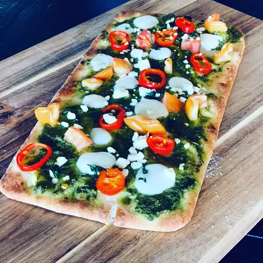

Pesto Pizza
AllRecipes Link

Description
A quick and easy recipe that can be made as an appetizer or as a meal for a single person. Expected prep time and cook time are 10 mins each. Enjoy!
Ingredients
- 1 (12 inch) pre-baked pizza crust
- ½ cup pesto
- 1 ripe tomato, chopped
- ½ cup green bell pepper, chopped
- 1 (2 ounce) can chopped black olives, drained
- ½ small red onion, chopped
- 1 (4 ounce) can artichoke hearts, drained and sliced
- 1 cup crumbled feta cheese
Steps
- Preheat the oven to 450 degrees F (230 degrees C).
- Spread pesto on pizza crust. Top with tomato, bell pepper, olives, red onion, artichoke hearts, and feta cheese.
- Bake in the preheated oven until cheese is melted and browned, 8 to 10 minutes.